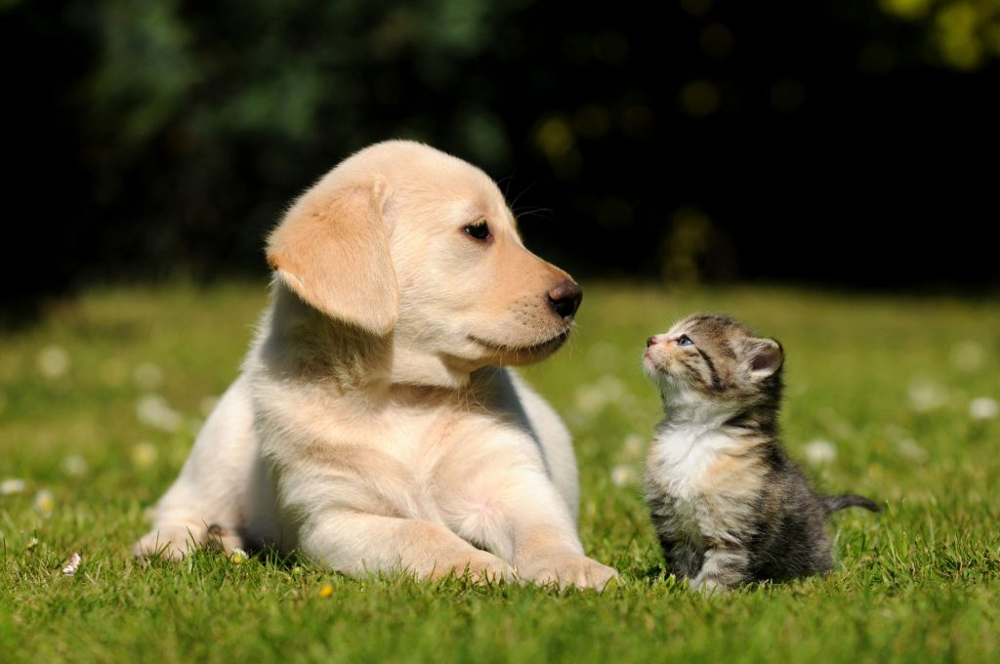

Pets To Go - About

Info:
Pets To Go Animal Shelter
3183 S Veterans Pkwy
Springfield, Illinois 62704
(217) 698-3091
Founded in 2009, Pets To Go is a non-profit and Springfield’s only no-kill animal shelter. Since it’s opening Pets to Go has placed an estimated 18,000 homeless cats and dogs in new households. Pets To Go works in conjunction with the Animal Rescue League location services to locate the original owners of lost pets as well as finding new homes for abandoned animals. Pets To Go relies on donations from United way, private donations, and volunteers to operate this facility.
Want To Volunteer?
Visit our contact page or call the number listed above.
Donations
We take all donations - Call us for more info.